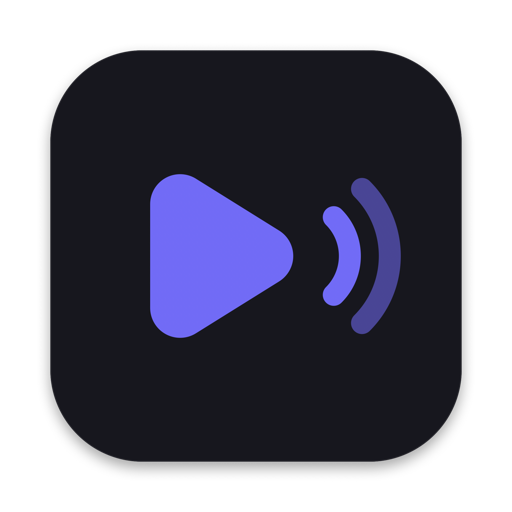
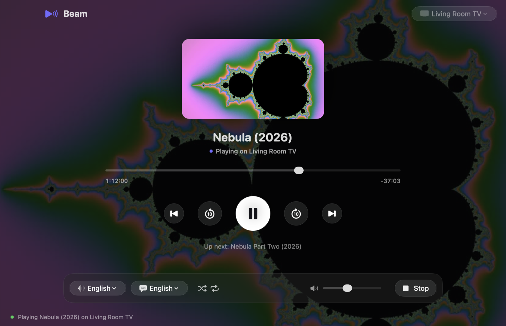
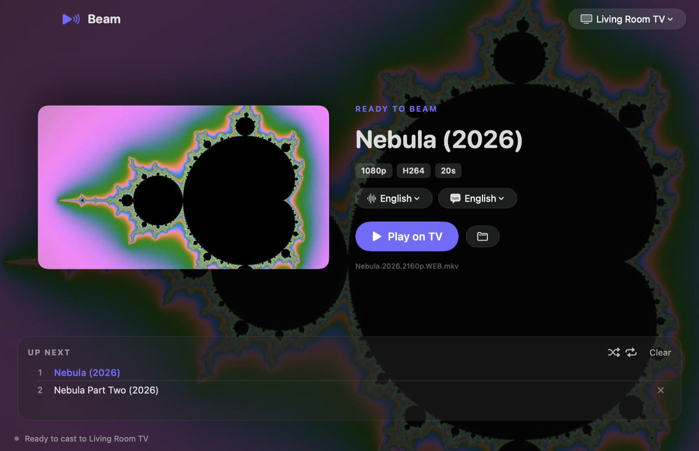
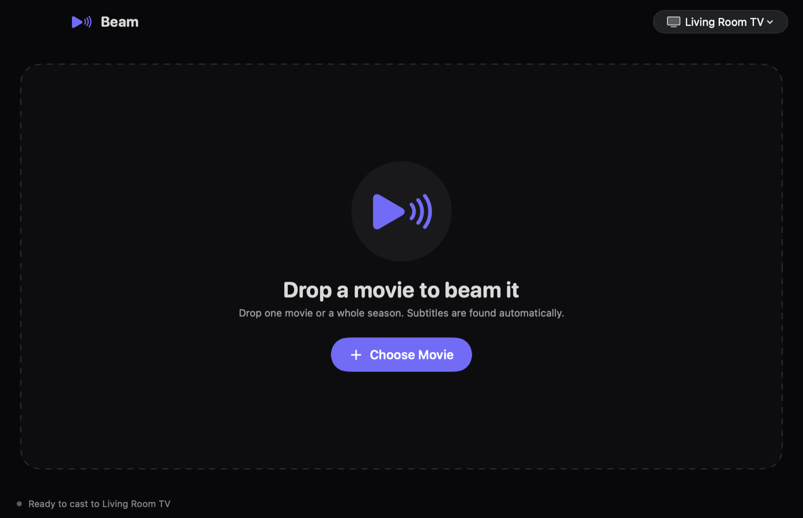

BeamBeam plays the movies on your Mac on any Chromecast or Google Cast TV. Drop a file, press play.
curl -fsSL https://prasad-kumkar.github.io/beam-cast/install.sh | bash

Works with Chromecast, Chromecast with Google TV, Chromecast Ultra, Google TV and Android TV sets (Sony, TCL, Hisense, Philips and more) and other Google Cast receivers.
MP4, MKV and MOV up to 4K HEVC, streamed straight from your Mac with no upload or conversion.
Finds subtitles next to the movie or inside it. SRT, VTT, ASS. Fix timing and style while you watch.
Switch language or commentary tracks, and Beam remembers your preference.
Drop a whole season. Episodes play back to back, with shuffle and repeat.
Every movie picks up where you stopped, even days later.
Play, pause and skip from your keyboard or Control Center while Beam stays in the background.


Install Beam, make sure your Mac and Chromecast are on the same Wi-Fi network, drop the video file onto Beam, pick your TV in the top-right corner and press Play on TV. Beam streams the file directly from your Mac; you don't need Google Chrome.
Yes. Beam streams MKV, MP4, M4V, MOV and WebM files to Chromecast and Google TV, including 4K HEVC (H.265) and H.264 video. Playback depends on the codecs your TV supports; MP4 is the most widely supported.
Yes. Beam loads SRT, VTT, ASS and SSA subtitle files automatically when they sit next to the movie, and it can use subtitles embedded in MKV files. You can change subtitle size, color and background, and fix out-of-sync subtitles while the movie plays.
Yes. For movies with several audio tracks, such as different languages or a director's commentary, choose the track from Beam's audio menu and Beam switches it on the TV.
Any Google Cast receiver: Chromecast, Chromecast Ultra, Chromecast with Google TV, Google TV Streamer, and smart TVs running Google TV or Android TV from brands such as Sony, TCL, Hisense and Philips.
Beam is free for personal, non-commercial use. Its source code is available on GitHub under the Business Source License 1.1; business and commercial use needs a commercial license.
Yes. Beam is a native universal macOS app for Apple silicon (M1, M2, M3, M4) and Intel Macs running macOS 13 Ventura or later.
Open Terminal, paste this and press Return. Beam installs to Applications and opens, with no security prompt. Run it again any time to update.
curl -fsSL https://prasad-kumkar.github.io/beam-cast/install.sh | bash
brew install ffmpeg adds poster frames, embedded subtitles and audio track switching.curl -fsSL https://prasad-kumkar.github.io/beam-cast/install.sh | bash -s -- --uninstall